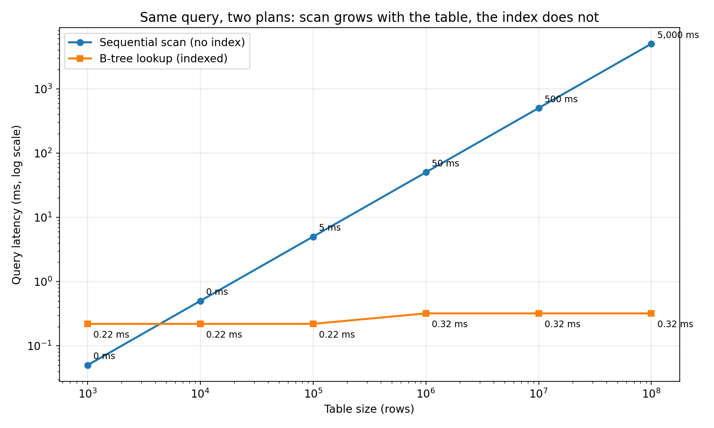
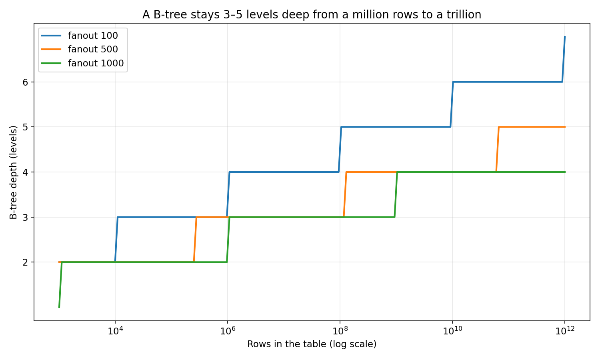
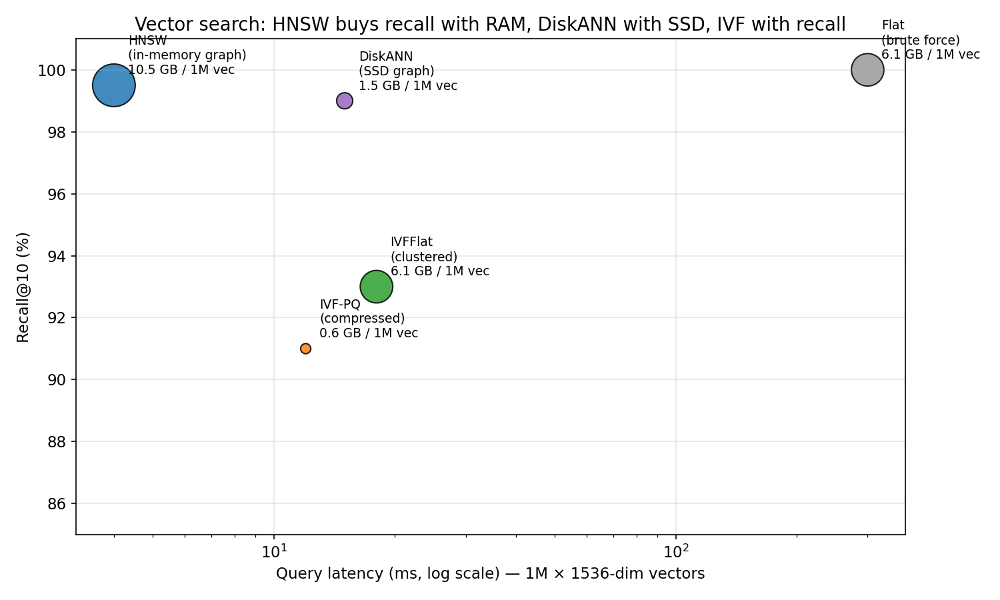
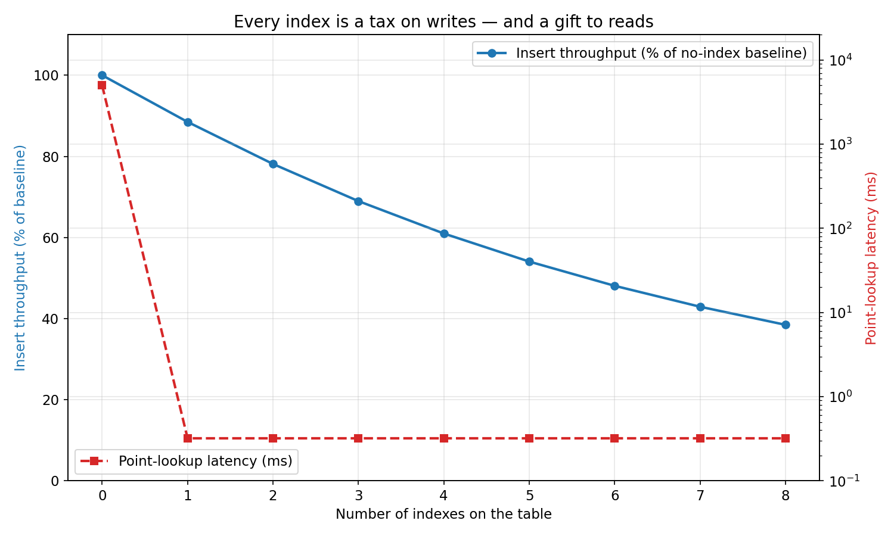

On a Tuesday morning, a team shipped a feature that let users search their own order history. The query was one line — WHERE user_id = ? ORDER BY created_at DESC LIMIT 20 — and it ran in 3 milliseconds in staging. In production, with 100 million orders, it ran in 5 seconds. Same query, same code, same database. The difference was 100 million rows and one missing line in the schema: there was no index on user_id, so every search read every order ever placed, sorted them, and threw away all but twenty.
The fix was also one line — CREATE INDEX — and the query went back to 0.32 milliseconds. Not 5 seconds to 4 seconds. Five seconds to a third of a millisecond: a 15,625x speedup from a single line of DDL. That is what an index is: the difference between reading the whole book and reading the index at the back of it.
This is Part 9 of System Design, Plainly: one concept per post, evergreen, beginner-friendly, with the concrete numbers and the failure modes. Today: database indexes — the B-tree, the LSM-tree, the vector index, and why the same query is 1 ms on one and 10 seconds on the other.
The ELI5 version
A database table without an index is a book with no index and no table of contents: to find one page, you start at page one and read until you find it. A table with an index is a book with an index: you look up the word, the index tells you the page number, and you open straight to it.
The most common index is the B-tree — a balanced, sorted tree. Think of it as a phone book that is itself indexed: the root page tells you which section your name is in, the section page tells you which column, and the leaf page holds the actual entries. Because each page fans out to hundreds of entries, the tree stays shallow: our arithmetic says a table with a billion rows is 4 levels deep at a fanout of 500, and a trillion-row table is 5. Finding any row costs one page read per level — three or four reads, no matter how big the table gets.
Our simulation makes the gap exact. Finding one row in 100 million by binary search takes 27 comparisons; scanning takes 100,000,000. In latency terms, the scan is 5,000 ms and the index lookup is 0.32 ms — the scan grows with the table, the lookup does not. That is the whole pitch for indexes in one chart: one line climbs with the table, the other is flat.

How it works: the tree, the log, and the list
The B-tree, and why depth is the whole game. A B-tree keeps keys sorted across pages, each page holding hundreds of keys and pointers to child pages. A point lookup descends one page per level; a range query (BETWEEN, ORDER BY, LIKE 'prefix%') walks to the first matching key and then reads forward in order. The depth formula is ceil(log_fanout(N / fanout)) + 1, and the numbers are almost boring in how flat they are: at fanout 500, 1 million rows is depth 3, 1 billion is depth 4, 1 trillion is depth 5. At fanout 1,000 — wider pages, longer keys — a billion rows is depth 3. This is why "add an index" is the first answer to a slow query and usually the last one needed: the lookup cost of a sorted structure is logarithmic, and the logarithm of anything a real company stores is a single digit.

Composite indexes and the left-prefix rule. An index on (country, city, signup_date) is one sorted structure, ordered first by country, then city within each country, then date within each city. A query filtering on country can use it; a query on country + city can use it even better; a query filtering only on city cannot — the tree is not sorted by city first, so there is no range to jump to. Our toy demo on 100,000 rows makes the penalty concrete: country = 'DE' inspects 20,097 rows, country + city inspects 970, and city alone inspects all 100,000 — to return the same 970 rows. The left-prefix rule is the most violated index principle in production, and the fix is boring: put the most selective, most-queried column first, or build a second index. PostgreSQL 18 softened the edge with skip scan — it can iterate the distinct values of the leading column and probe each — but the planner only picks it when the leading column has few distinct values. Skip scan is a rescue, not a design.
Covering indexes: answer from the index alone. If every column a query needs is in the index, the engine never touches the table at all — an index-only scan. CREATE INDEX ... ON orders (user_id, created_at) INCLUDE (total) answers "last 20 orders with totals" from the index pages alone. The price is size: every included column makes the index bigger and slower to maintain. The rule of thumb is to cover the hot read path and nothing else — a covering index on a wide row is a second copy of the table that you pay to update on every write.
Hash indexes: equality only, and fast at it. A hash index answers = in O(1) — one bucket, no tree walk — but it cannot do ranges, sorting, or prefix matches. PostgreSQL's hash indexes are smaller than B-trees for long keys (UUIDs, URLs) and useless for anything else. The interview answer: hash for exact lookups on long keys, B-tree for everything else.
The LSM-tree: the index that writes first and sorts later. B-trees pay for their sortedness on every write: an insert must find the right leaf page, and if the page is full it splits — random I/O, write amplification. The LSM-tree (log-structured merge-tree), the engine inside RocksDB, Cassandra, and ScyllaDB, flips the trade: writes go to an in-memory table and a sequential log — fast, append-only — and are merged into sorted files on disk later, in the background. Reads pay instead: a lookup may have to check several files and a Bloom filter before finding the key. LSM is the right answer when writes dominate — ingestion pipelines, time-series, event logs — and the wrong answer when point reads must be single-digit milliseconds with no variance. The choice between B-tree and LSM is the choice between paying on write and paying on read, and every storage engine is one sentence about which side it chose.
GIN, GiST, BRIN: the specialists. PostgreSQL ships six built-in index types because one structure cannot serve every query shape. GIN (generalized inverted index) is the index for values that contain many values — arrays, JSONB, full-text tsvector — one entry per element, so "find documents containing this word" is a lookup, not a scan. GiST is the framework for geometry, ranges, and nearest-neighbour on non-scalar types. BRIN (block range index) stores only the min/max of each block range of the table — 100–1,000x smaller than a B-tree — and is the right answer for very large tables whose rows arrive in order, like append-only logs and time-series: the index is tiny because the data is already nearly sorted. The interview move is not to recite the list; it is to match the shape: one value → B-tree, many values → GIN, ordered bulk → BRIN, geometry → GiST.
The state of the art: the 2026 landscape
PostgreSQL 18 and 19. PostgreSQL 18 (September 25, 2025) shipped two index features worth knowing: skip scan on multi-column B-trees, and parallel GIN index builds — GIN builds, historically the slowest in the system, now parallelise like B-tree and BRIN. PostgreSQL 19, in release candidate since October 15, 2026 with GA planned November 19, 2026, continues the same direction: the planner gets smarter about when an index beats a scan, and the index types get cheaper to build. The practical upshot for a system design answer in 2026: Postgres is the default, its B-tree is the default inside the default, and the exotic types are one USING clause away.
Vector indexes: the new index type, for a new data type. Embeddings broke the B-tree — "find the 10 vectors closest to this one" is not an equality or a range, and a B-tree cannot answer it. The answer is approximate nearest-neighbour (ANN) indexes, and three families now dominate. HNSW (hierarchical navigable small world) builds a multi-layer proximity graph and walks it greedily: the highest recall in the field, 99.1–99.8% at 2–6 ms per query on 1M × 1536-dim vectors, at the cost of holding vectors plus graph in RAM — roughly 9.5–12 GB per million vectors, and 70–100 GB for 10 million. IVF (inverted file) clusters vectors with k-means and searches only the nearest clusters: far less memory, but recall drops to 88–94% and degrades when the data drifts, because the clusters were trained on yesterday's distribution. DiskANN / Vamana keeps the graph on SSD and streams it in: Timescale's 2026 benchmark reports pgvectorscale hitting 471 queries per second at 99% recall on a 50-million-vector dataset, the disk-backed answer for corpora too big to hold in RAM.
Our toy HNSW shows the knob that controls all of it. On 2,000 random 32-dimensional points with a small greedy graph, recall@10 rises with the candidate-list size ef_search: 0.620 at ef=10, 0.917 at ef=40, 0.993 at ef=100, 1.000 at ef=200 — and the cost rises with it, from 96 nodes visited to 771. That is the entire tuning story of vector search in one curve: ef_search trades latency for recall, and pgvector's default of 40 lands at 0.917 in our toy — good enough for most RAG systems, too low for a recall-critical one.

A third-party benchmark on identical 8-vCPU / 32 GB hardware, 1M × 1536-dim vectors, puts the engines in order: Qdrant (HNSW + scalar quantisation) 6.8 ms p95, 1,240 req/s, 98.4% recall; Milvus 2.4 (HNSW) 8.4 ms, 1,080 req/s, 98.1%; pgvector 0.7 (HNSW) 14.2 ms, 420 req/s, 97.2%; Pinecone Serverless 28.5 ms, 97.6%. The ranking is stable across write-ups: a dedicated engine wins on raw throughput, Postgres wins on "the vectors live next to the rest of your data, in one transaction, with one backup." Under ~5 million vectors, Postgres + pgvector is the boring, correct answer; beyond that, or with heavy filtered search and multi-tenancy, a dedicated engine earns its keep.
Why it breaks: the five failure modes
1. The missing index. The opening incident, and still the most common slow-query cause in production: a query that filters on a column nobody indexed. The signature is unmistakable in EXPLAIN ANALYZE — Seq Scan on a table with millions of rows, and a filter that removes 99.9% of them. The fix is one line of DDL, and the lesson is process: every new query shape in a deploy should arrive with its index, because the table only grows and the scan only gets slower. In our model the scan at 100M rows is 5,000 ms; at a billion it is 50 seconds.
2. The wrong index: left-prefix and selectivity. An index exists, the query is still slow, and the planner ignores the index anyway. Two usual causes: the query skips the leading column (the city-only case above — 100,000 rows inspected for 970 matches), or the leading column is not selective — an index on country where 90% of rows are one country helps nobody, because the planner correctly decides that scanning is cheaper than random page reads. The interview sentence: an index helps when it is selective, and selectivity is measured, not assumed — check pg_stats before creating the index, not after.
3. The write tax: every index is a second table to maintain. An index is not free storage; it is a data structure that must be updated on every insert, update, and delete. Our toy model puts numbers on it: each extra B-tree index costs ~12% of insert throughput, so a table with 8 indexes runs inserts at 38.5% of the no-index baseline — while the first index already delivered the whole read win, 5,000 ms down to 0.32 ms. The second through eighth indexes buy narrower and narrower read wins and charge the same write tax. This is why write-heavy tables (event ingestion, clickstreams) run with few indexes and why the "index everything" table is the one that falls over at peak write load.

4. Bloat and stale statistics: the index that lies. B-trees do not shrink when rows are deleted — dead entries linger until VACUUM reclaims them, and a bloated index is a bigger tree with the same keys, slower at every level. Worse, the planner chooses plans from statistics, and stale statistics make it choose wrong: it picks a sequential scan because it thinks the table is small, or an index scan because it thinks a value is rare. The operational fix is unglamorous — autovacuum tuned, ANALYZE after bulk loads, REINDEX when bloat is measured — and the interview point is that an index is a living structure with maintenance, not a line of DDL you write once.
5. Vector drift: the recall that decays silently. IVF clusters go stale as the data distribution shifts — the clusters were trained on last quarter's embeddings, and this quarter's queries land on cluster boundaries, where recall collapses. HNSW degrades more gracefully but still needs its graph maintained as vectors churn; deletes leave tombstones, and a graph that was built for yesterday's corpus routes today's queries through dead ends. The mitigation is the same as for B-trees, with a measurement step: build a flat ground-truth set on a few thousand queries, compute recall@10 against it on a schedule, and rebuild or retune ef_search when recall slips below your floor. Recall is a metric, not a property — if you are not measuring it, you do not have it.
One more, for the interview: an index is not a substitute for a good query. SELECT * with an index still fetches every column from the heap; a query that filters on a function of a column (WHERE lower(email) = ...) cannot use a plain index on email — it needs an expression index, or the function applied once at write time. The index accelerates the access path you actually wrote, not the one you meant.
The interview angle
"Design the data layer for a social feed" is the question this post is really about, and the grading rubric is almost entirely the index table above. The answer that passes:
- Start with the queries, not the tables. List the read patterns first — point lookup by id, range by time, filter by user, full-text search, vector search — and name one index per pattern before naming a database.
- Draw the B-tree and write the depth. A billion rows, fanout 500, depth 4: four page reads. The 27-comparisons-vs-100-million number is the sentence that ends the "but indexes are slow" argument.
- Name the write tax out loud. Every index costs ~12% of insert throughput in our model; 8 indexes leave 38.5%. Say how many indexes the write path can afford before you add the ninth.
- Handle the left-prefix trap unprompted: composite
(user_id, created_at)serves both the user filter and the time order; a query oncreated_atalone does not get to use it. - Close with the vector answer: embeddings need an ANN index — HNSW under ~5M vectors in Postgres, DiskANN or a dedicated engine above it — and recall is measured against a flat ground truth, not assumed from the algorithm's name.
Takeaways
- A lookup is logarithmic; a scan is linear. 27 comparisons vs 100,000,000 at 100M rows; 0.32 ms vs 5,000 ms. The index is the difference between reading the book and reading the index.
- Depth is the whole game. A B-tree at fanout 500 is 3 levels at a million rows, 4 at a billion, 5 at a trillion. Lookup cost barely moves as the table grows 1,000x.
- The left-prefix rule is the most violated principle in production. A query on
cityalone inspects 100,000 rows to return 970; add the leadingcountryand it inspects 970. Order the composite by what you actually filter on. - Every index taxes writes. The first index buys the whole read win; eight indexes leave 38.5% of insert throughput. Count indexes like a budget, not a wish list.
- Vector search trades recall for latency, and the knob is
ef_search. In our toy HNSW, recall@10 climbs 0.620 → 0.917 → 0.993 asef_searchgoes 10 → 40 → 100. Measure recall against a flat baseline, or you do not have it.
Follow for the next part: Part 10 is CDNs — the edge, the cache, and why your users in Sydney wait 300 ms for a page your users in Virginia get in 30. If this series is useful, the follow button on the dev.to profile is where the next part lands first.
Honesty note: the 5,000 ms vs 0.32 ms latency model, the 27-vs-100M comparison counts, the B-tree depth arithmetic, the write-tax percentages (100% → 38.5% at 8 indexes), the left-prefix inspection counts (20,097 / 970 / 100,000), and the HNSW recall curve (0.620 / 0.917 / 0.993 / 1.000 at ef_search 10 / 40 / 100 / 200) are simulations run on this machine (companion notebook) — real measurements of toy models, not production telemetry. The PostgreSQL 18 skip-scan and parallel-GIN facts are from the 18 release notes and the PostgreSQL docs; PostgreSQL 19's release-candidate status and November 19, 2026 GA plan are from the RC notes. The BRIN 100–1,000x size figure is a vendor/practitioner guide claim. The ANN figures (HNSW 99.1–99.8% at 2–6 ms, 9.5–12 GB per 1M vectors, 1.5–3 h build per 1M; IVF-PQ 88–94% recall, 85–95% memory saving; pgvectorscale 471 qps at 99% recall on 50M vectors) are the cited benchmarks' own reported results, and the Qdrant/Milvus/pgvector/Pinecone head-to-head (6.8 / 8.4 / 14.2 / 28.5 ms p95, 98.4% / 98.1% / 97.2% / 97.6% recall) is a third-party benchmark on one hardware configuration, flagged as such. No Meta content, per the standing exclusion.